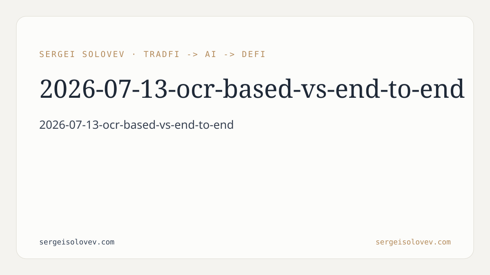

```markdown
---
title: OCR Pipeline vs. End-to-End Transformer for Receipt KIE: SROIE 2019 Benchmark Results
date: 2026-07-13
slug: ocr-based-vs-end-to-end
meta_description: EasyOCR pipeline vs. Donut on SROIE 2019: micro-F1, field-level breakdown, error taxonomy, and robustness under image corruption.
tags: [document, AI]
canonical_doi: 10.6084/m9.figshare.31430086
---
Every automated finance workflow that touches physical documents eventually hits the same bottleneck: extracting structured fields from scanned receipts that were never designed for machine readability. The industry has converged on two fundamentally different architectural approaches. The first is the cascaded OCR pipeline: recognize text, then extract fields from that text using rules or a second model. It is auditable, modular, and easy to update. The second is the end-to-end vision-language transformer: take raw pixels in, emit structured output, skip the intermediate text representation entirely. It promises to sidestep OCR errors and generalize better to degraded images. Practitioners choose between these paradigms based on intuition, vendor benchmarks, or convenience. What the field has lacked is a controlled comparison on a standard benchmark, under both clean and real-world corrupted conditions, with failure modes characterized in enough detail to actually guide architectural decisions. This paper provides that comparison.
The comparison centers on two concrete implementations. The OCR pipeline combines EasyOCR for text recognition with rule-based field extraction — the standard cascaded architecture where text recognition and field parsing are fully separate, sequential stages. Each stage has its own failure modes, and errors in the recognition stage propagate into the extraction stage with no correction mechanism between them. The end-to-end model is Donut, a vision-language transformer trained to map raw image pixels directly to structured output. Donut processes the image without any intermediate text representation.
Both systems are evaluated on the ICDAR 2019 SROIE benchmark, the established standard for key information extraction from scanned receipts. The evaluation set is 80 validation receipts. The three target fields are vendor, date, and total — a representative sample of the extraction tasks that appear in financial document workflows. Evaluation runs under two conditions: clean scans and messenger-grade corrupted images. The corruption condition simulates what happens when receipts are photographed on consumer devices and transmitted through messaging applications, which compress and re-encode images in ways that reduce recognition accuracy. Testing under degraded conditions is the difference between a benchmark that reflects lab performance and one that reflects what actually happens after the system ships.
The aggregate results give the fine-tuned Donut model an overall micro-F1 of 0.75 compared to 0.63 for the OCR pipeline. On a single metric, the end-to-end model wins. Field-level decomposition immediately complicates this: the OCR pipeline achieves a date extraction F1 of 0.78 versus Donut's 0.63. The reversal is structural, not accidental. Date is a closed-vocabulary field: a finite set of formats that regex patterns capture precisely and reliably. The rule-based extraction stage exploits this directly. Donut generates output as sequences and has no corresponding built-in constraint for structured fields. On vendor and total, where field values are more variable, the end-to-end model recovers its advantage.
To move beyond aggregate F1, the study applies a 12-category error taxonomy to both pipelines and compares their per-document failure profiles. The Pearson correlation between the two systems' error indicators across documents is 0.30. This is the most practically useful finding in the paper. A correlation of 0.30 means the two systems are failing on largely non-overlapping subsets of documents. When one system fails, the other typically does not — which is precisely the necessary condition for a productive ensemble. If both systems failed on the same documents, combining them would add complexity without reducing the overall error rate.
Under corrupted image conditions, the end-to-end model demonstrates superior robustness. Donut's micro-F1 drops by 0.12 under degradation; the OCR pipeline drops by 0.17. The five-point difference in degradation magnitude validates the theoretical case against cascaded architectures in uncontrolled image environments. When OCR accuracy falls, extraction accuracy falls further because the extraction stage operates on degraded input with no ability to recover. An end-to-end model has no error propagation between stages because there are no stages.
For practitioners choosing a document extraction architecture, the headline takeaway is that aggregate benchmark performance is not sufficient information to make the decision. Donut's overall micro-F1 advantage does not mean Donut is the right choice for every deployment. If the field types in your application are predominantly closed-vocabulary — dates, invoice numbers, currency totals in a constrained format — the OCR pipeline's structural advantage on date extraction generalizes: rule-based extraction on recognized text is precise, interpretable, and maintainable when formats change. You also retain the ability to inspect and correct the intermediate OCR output, which matters in regulated financial contexts where auditability is a requirement, not a preference.
If you do not control the image quality of your inputs — user-submitted receipts, documents received from third parties, anything that passes through a consumer messaging application — the robustness gap matters more than the field-level precision gap. The corrupted-condition results make a quantitative case: the OCR pipeline loses five more F1 points than Donut under degradation. In a production pipeline where some fraction of incoming images are always degraded, this translates directly to higher error rates on a class of input that cannot be corrected upstream. For teams building document AI for financial automation — invoice processing, expense management, payment reconciliation — this is the operational failure mode that actually drives support tickets and manual review queues.
The error non-overlap result (Pearson r = 0.30) is the finding that most directly motivates further engineering work. It means the two architectures fail on different documents, which is exactly the condition under which an ensemble adds real value. A system that routes inputs through both pipelines and aggregates outputs — using confidence scores, voting, or a lightweight meta-classifier — would address a different and larger set of failure cases than either system alone. The code, trained checkpoints, and data released with this paper at [https://github.com/SergeySolovyev/Invoice-DocAI](https://github.com/SergeySolovyev/Invoice-DocAI) provide the infrastructure to implement and evaluate exactly this kind of ensemble on a reproducible baseline.
The evaluation set is 80 validation receipts from the SROIE 2019 benchmark. This is sufficient to establish the aggregate and field-level performance patterns reported, but SROIE has known limitations in format diversity, language coverage, and degradation variety. The 12-category error taxonomy characterizes failure modes but does not analyze how failure rates vary with specific document characteristics beyond the clean/corrupted split. The ensemble strategies motivated by the error non-overlap result are proposed as future work and not implemented or benchmarked here. The study evaluates Donut fine-tuned on SROIE rather than a zero-shot or few-shot configuration, so results do not generalize to out-of-domain deployment without additional fine-tuning. Extending this comparison to broader receipt corpora, additional field types, and explicit ensemble implementations — including evaluation of whether the non-overlap persists at scale — is the natural continuation of this work.
---
```bibtex
@misc{solovev2026ocr,
author = {Solovev, Sergei},
title = {{OCR-Based vs. End-to-End Transformer Pipelines for Receipt Information
Extraction: A Comparative Study on SROIE 2019}},
year = {2026},
note = {Preprint},
publisher = {Figshare},
doi = {10.6084/m9.figshare.31430086},
url = {https://doi.org/10.6084/m9.figshare.31430086}
}
```
```